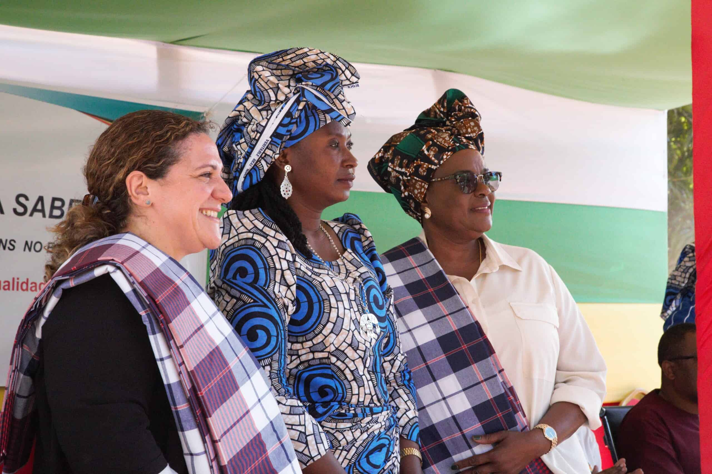
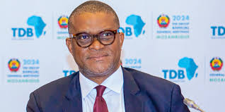

Current Ministers
South Africa has a number of key ministers in its government. Here are some of the prominent figures:
Carmelita Rita Namashulua
Ernesto Max Elias Tonela
Eldevina Kika Materula


.jpeg "Eldevina Kika Materula")
Mozambique's political landscape is currently quite turbulent. The country recently experienced significant unrest following the presidential and parliamentary elections in October 2024.
The ruling party, Frelimo, claimed a landslide victory, but these results have been widely contested, leading to sustained and widespread protests2.
The opposition, led by Venâncio Mondlane, has called for new demonstrations, citing widespread voter fraud
The unrest reflects broader discontent with the socioeconomic status quo, including limited social mobility and growing inequalities.
The Southern African Development Community (SADC) has called for an extraordinary summit to address the political crisis
Mozambique's political system is a semi-presidential representative democratic republic, with the President serving as both head of state and head of government.
The country has a history of political instability, including a long civil war and ongoing challenges with corruption and economic mismanagement
Mozambique's political crisis is a complex and multifaceted issue. The recent elections on October 9, 2024, have sparked significant unrest and controversy.
The ruling party, Frelimo, declared victory with 71% of the vote, but these results have been widely condemned as fraudulent2.
Opposition leader Venâncio Mondlane, who received only 21% of the preliminary vote, has called for fresh elections and announced new protests across all provinces
Mozambique's political crisis is a complex and multifaceted issue.
The recent elections on October 9, 2024, have sparked significant unrest and controversy. The ruling party, Frelimo, declared victory with 71% of the vote,
but these results have been widely condemned as fraudulent2. Opposition leader Venâncio Mondlane,
who received only 21% of the preliminary vote, has called for fresh elections and announced new protests across all provinces
People and Ethnic Groups
Main Ethnic Groups: The country is home to various ethnic groups, including the Makhuwa, Tsonga, Makonde, Shangaan, Shona, Sena, Ndau, and other indigenous groups.
Languages: Portuguese is the official language, but many local languages are spoken, such as Emakhuwa, Xichangana, and Cisena.
Economic Overview
GDP: Mozambique's GDP was approximately $14.396 billion (nominal) in 2018.
Growth Rate: The economy is expected to grow by around 4% per year from 2024 to 2026.
Main Sectors: Agriculture (29.5%), industry (23.9%), and services (46.5%).
Official Language
Portuguese: The official language of Mozambique, used in government, education, and media. It is a legacy of Mozambique's colonial past.
1. Makua
Location: Predominantly in the northern provinces.
Population: The largest ethnic group in Mozambique.
Culture: Known for their traditional crafts, agriculture, and vibrant musical traditions.
South Africa is home to many iconic landmarks, from historical sites to natural wonders. Here are some of the most famous landmarks:
Maputo
Mozambique has several well-known universities, including:
South Africa has a number of key ministers in its government. Here are some of the prominent figures:
Carmelita Rita Namashulua
Ernesto Max Elias Tonela
Eldevina Kika Materula
Recent GDP Performance
2023: Mozambique's GDP grew by an estimated 5.0%. This growth was driven mainly by the extractive industries, particularly liquefied natural gas processing in the Coral South Field2.
2022: The GDP growth rate was 4.2%, showing a steady recovery from the economic impact of the COVID-19 pandemic.
2021: The economy expanded by 2.5%, marking a return to positive growth after a contraction in 2020.
2020: The GDP shrank by 1.2%, the first decline in recent years due to the pandemic.